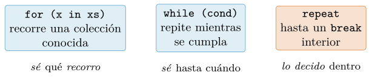
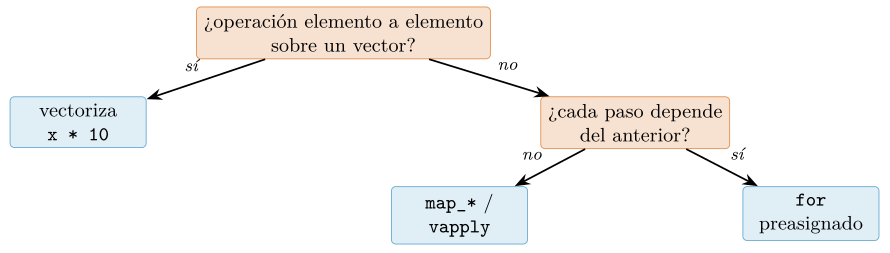
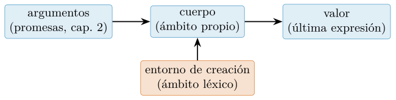
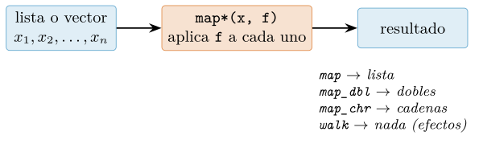
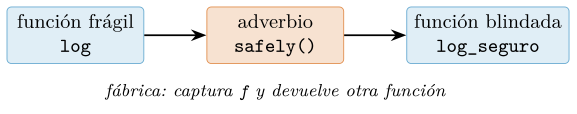
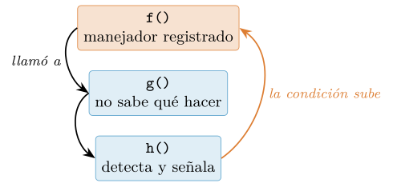
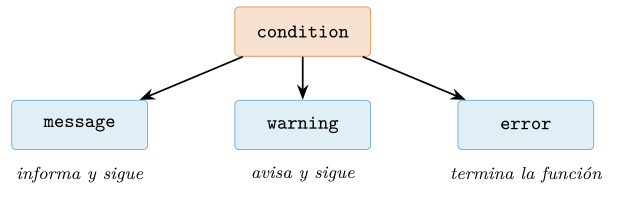

Capítulo 3. Control de flujo, funciones y manejo de errores
▶ Ejecutar este capítulo en Binder
La primera vez que se abre, Binder construye el entorno en la nube (unos 10-20 min); verás una pantalla de progreso. Después queda en caché y abre en segundos. Si parece que no responde, espera a que termine de construirse o vuelve a intentarlo.
Con el modelo de datos en la mano (cap. 2), toca el modelo de ejecución: cómo se decide, cómo se repite, cómo se empaqueta el trabajo en funciones y qué pasa cuando algo sale mal. Aquí R enseña su segunda carta de identidad: es, de nacimiento, un lenguaje funcional. Las funciones son valores como cualquier otro —se guardan, se pasan, se devuelven—, la repetición idiomática se escribe más a menudo con map que con for, y los fallos no son explosiones que tumban el programa sino condiciones: señales con clase y con datos que viajan hasta quien sepa atenderlas. Dominar estas tres ideas —función como valor, repetición declarativa, fallo como señal— es lo que separa un guion que funciona una tarde de un programa que procesa datos ajenos un año entero.
El recorrido: el condicional y switch; los tres bucles y su regla de oro (vectoriza); las funciones por dentro (valor, argumentos, ...); el estilo funcional con la familia map de purrr y los adverbios que envuelven funciones; una dosis justa de recursión; los contratos que hacen fallar pronto y claro (stopifnot, checkmate); y el sistema de condiciones completo —señalar, capturar, clasificar, limpiar— hasta un integrador que procesa un lote de datos imperfectos sin perder ni un fallo ni la compostura. Como siempre, cada salida mostrada se ha ejecutado en R.
El condicional: decidir un camino
if es una expresión
La forma del condicional no sorprende a nadie: if (condición) { ... } else { ... }, con la condición entre paréntesis y las llaves delimitando cada rama. Lo que sí sorprende —y conviene adoptar pronto— es que en R el if no es una sentencia sino una expresión: produce un valor, y ese valor se puede asignar. La versión idiomática de «etiqueta según el caso» no reparte asignaciones por las ramas; asigna el resultado del if:
x <- 7
etiqueta <- if (x > 5) "grande" else "pequeno"
etiqueta # "grande" <- el if DEVOLVIO un valorLa diferencia no es cosmética. Asignar el resultado garantiza que etiqueta existe se tome la rama que se tome, mientras que el patrón de asignar dentro de cada rama deja la puerta abierta a que una rama futura olvide hacerlo. Si falta el else y la condición es falsa, el if devuelve NULL de forma invisible —otro motivo para escribir el else siempre que el valor se use—. Las escaleras se encadenan con else if, y las reglas duras de la condición ya quedaron fijadas en el capítulo anterior: un NA es un error (§2.6.2), un vector de longitud mayor que uno también (desde R 4.2), y para decidir elemento a elemento sobre un vector la herramienta no es if sino if_else()/case_when() (§2.6.5).
switch: la escalera compacta
Cuando la decisión es «según el valor de esta cadena, una de estas opciones», la escalera de else if se comprime con switch(), que tiene tres reglas propias que conviene conocer porque ninguna es obvia:
describe <- function(genero) {
switch(genero,
pop = "melodias pegadizas",
rock = , # rama VACIA: cae en la siguiente
metal = "guitarras",
"otro estilo") # ultima sin nombre: el caso por defecto
}
describe("pop") # "melodias pegadizas"
describe("rock") # "guitarras" <- cayo desde la rama vacia
describe("jazz") # "otro estilo" <- el defectoPrimera regla: una rama vacía (el rock = ,) hace que ese caso «caiga» en la rama siguiente, la forma de dar la misma respuesta a varios valores sin repetirla. Segunda: el último argumento sin nombre actúa de caso por defecto; si no lo hay y nada coincide, switch() devuelve NULL en silencio —un clásico generador de «¿de dónde salió este NULL?»—. Y tercera: con un entero en vez de una cadena, switch(2, "a", "b", "c") elige por posición ("b"), un uso menor pero que aparece en código ajeno. Como el if, switch() es una expresión: se asigna su resultado.
Y como las ramas pueden devolver cualquier valor, pueden devolver una función —anticipo del estilo del resto del capítulo—. Este despachador elige el lector adecuado según la extensión del fichero, y el error del caso por defecto convierte lo no soportado en un mensaje claro en vez de en un NULL misterioso:
lee_datos <- function(ruta) {
ext <- tools::file_ext(ruta)
lector <- switch(ext,
csv = read.csv,
json = \(f) as.data.frame(jsonlite::fromJSON(f)),
stop("extension no soportada: ", ext)) # el defecto tambien puede FALLAR
lector(ruta)
}
lee_datos("catalogo.csv") # despacha a read.csv
lee_datos("catalogo.json") # despacha al lector JSON
lee_datos("catalogo.xlsx") # Error: extension no soportada: xlsxBucles: for, while y repeat
R tiene tres bucles, y elegir entre ellos es responder una pregunta: ¿cuánto se sabe de antemano sobre las vueltas? Se conoce la colección a recorrer → for. Se conoce solo la condición de continuar → while. No se conoce ni eso, porque la decisión de parar surge en mitad del cuerpo → repeat. La figura 3.1 los alinea.

for recorre una colección conocida; while repite mientras una condición se cumpla; repeat itera sin condición y sale solo con un break. Cuanta más estructura declara el bucle, más fácil es leerlo y menos maneras hay de equivocarse.for sobre cualquier colección
El for de R itera sobre un vector o una lista, elemento a elemento. Dos idiomas cubren la mayoría de los usos. Para trabajar con pares nombre-valor, se itera sobre names() e indexa dentro; para llenar un resultado posición a posición, se itera sobre seq_along() —nunca sobre 1:length(x), por la trampa del vacío vista en §2.1.3—:
medias <- c(pop = 0.73, rock = 0.85, jazz = 0.41)
for (g in names(medias)) cat(g, "->", medias[[g]], "\n")
# pop -> 0.73
# rock -> 0.85
# jazz -> 0.41
acum <- numeric(length(medias)) # preasignado (cap. 2)
for (i in seq_along(medias)) acum[i] <- medias[[i]] * 100
acum # 73 85 41Un detalle que sorprende a quien viene de lenguajes con ámbitos por bloque: el for de R no crea un ámbito propio. La variable de iteración vive en el entorno donde corre el bucle y sobrevive a su final —tras for (k in 1:3) {}, la variable k existe y vale 3—. No suele causar daño, pero explica de dónde salen variables «fantasma» en una sesión larga, y es una razón más para encerrar el trabajo en funciones, que sí tienen ámbito propio (§3.4).
while, repeat, next y break
while evalúa su condición antes de cada vuelta; repeat no evalúa nada y confía en que el cuerpo ejecute un break. Dentro de cualquier bucle, next salta a la vuelta siguiente y break lo abandona:
n <- 1
while (n < 100) n <- n * 2
n # 128 <- la primera potencia de 2 que alcanza 100
i <- 0
repeat {
i <- i + 1
if (i %% 2 == 0) next # los pares no cuentan
if (i > 7) break # la salida vive DENTRO
}
i # 9repeat es el adecuado para los patrones «hazlo al menos una vez» y «decide en medio»: leer bloques de un fichero hasta agotarlo, reintentar una descarga hasta que responda o se agote la paciencia (el integrador del cap. 5 hace exactamente eso). El break tiene además su patrón propio, la búsqueda del primero: recorrer candidatos en orden de preferencia y quedarse con el primero que sirva, sin mirar el resto:
candidatos <- c("config.local.yml", "config.yml", "config.default.yml")
elegido <- NULL
for (f in candidatos) {
if (file.exists(f)) { elegido <- f; break } # el primero que exista, y fuera
}
elegido # "config.yml" (si el local no existe y el general si)No hay más piezas: si un bucle necesita distinguir «terminé porque acabó la colección» de «terminé por un break», el idioma limpio es encapsularlo en una función y salir con return() en el caso especial (purrr tiene además detect(), que hace exactamente esta búsqueda: §3.5.3).
Cuándo el bucle es la herramienta correcta
El capítulo 2 ya midió el anti-patrón de crecer un vector dentro de un bucle, y la sección siguiente remata la regla general. Pero conviene decir alto lo contrario: hay bucles legítimos, y reconocerlos evita contorsiones. El criterio es la dependencia secuencial: si cada paso necesita el resultado del anterior, el bucle expresa el cálculo con honestidad. El ejemplo canónico es la media móvil exponencial, donde cada valor suavizado se construye sobre el anterior:
suaviza <- function(x, alfa = 0.3) {
s <- numeric(length(x)) # preasignado, como manda el cap. 2
s[1] <- x[1]
for (i in 2:length(x)) {
s[i] <- alfa * x[i] + (1 - alfa) * s[i - 1] # depende de s[i-1]
}
s
}
round(suaviza(c(10, 12, 9, 14)), 2) # 10.00 10.60 10.12 11.28Aquí no hay vectorización directa posible —cada elemento mira al anterior— y el bucle preasignado es rápido y claro. El segundo caso legítimo es la convergencia: iterar hasta que la mejora sea despreciable, sin saber de antemano cuántas vueltas hará falta. El método de Newton para la raíz cuadrada es el ejemplo de bolsillo, y luce el repeat con su salida por return():
raiz <- function(a, tol = 1e-10) {
x <- a / 2 # punto de partida cualquiera
repeat {
mejora <- (x + a / x) / 2 # el promedio se acerca a la raiz
if (abs(mejora - x) < tol) return(mejora)
x <- mejora
}
}
raiz(2) # 1.414214 <- coincide con sqrt(2) en 10 decimales
# con un contador dentro: raiz de 2 converge en 5 iteraciones;
# la de un millon, en 14: la convergencia es rapidisimaLos otros usos legítimos del bucle: simulaciones paso a paso, algoritmos iterativos (descenso de gradiente, cap. 13) y efectos secundarios deliberados (escribir un fichero por grupo). Para todo lo demás, sigue leyendo.
La regla de oro: vectoriza
La lección más rentable del capítulo cabe en una frase: en R, el bucle explícito es la última opción, no la primera. Casi toda operación sobre datos tiene una forma vectorizada (cap. 2) o una forma map (§3.5) que es a la vez más corta, más legible y más rápida. La medición del capítulo 1 lo cuantificó: sumar un millón de números con un bucle tarda, en nuestra máquina, del orden de diez veces más que sum() —y la distancia crece con la complejidad de la operación, porque la función vectorizada corre en C compilado mientras el bucle interpreta cada vuelta—.
| Situación | Herramienta | Dónde |
|---|---|---|
| misma operación en cada elemento | vectorización (x * 10) |
cap. 2 |
| una función por elemento, tipo conocido | map_dbl, vapply |
§3.5.3 |
| varios vectores en paralelo | map2, pmap, Map |
§3.5.3 |
| solo efectos (imprimir, guardar) | walk, bucle for |
§3.5.3 |
| cada paso depende del anterior | bucle for preasignado |
§3.2.3 |
| parar en medio, reintentos | repeat + break |
§3.2.2 |
La figura 3.2 ordena la decisión como árbol; la tabla 3.1 será más útil aún al final del capítulo, cuando la familia map esté sobre la mesa.

convertir la regla en superstición: cuando la función aplicada tiene entidad —leer un fichero, ajustar un modelo—, el coste vive en la función, no en el mecanismo de iteración, y un for preasignado, un vapply y un map_dbl tardan lo mismo (lo hemos medido). En esos casos la elección es de claridad y contrato, no de velocidad; donde la vectorización arrasa es en las operaciones elementales sobre vectores largos, que baja a C. La idea de fondo, que vertebra todo el volumen: piensa en colecciones enteras, no en elementos; declara qué quieres, no cómo recorrerlo.
Funciones I: anatomía
La función es la unidad de diseño en R: el capítulo 1 pedía encapsular cada paso del análisis en una, y este apartado explica la mecánica completa. La figura 3.3 descompone las piezas.

return.El valor: última expresión, return temprano, invisible
Una función devuelve la última expresión evaluada de su cuerpo; el return() explícito existe, pero el estilo idiomático lo reserva para las salidas tempranas —los casos especiales que se despachan al principio—:
f <- function(x) { y <- x * 2; y + 1 } # devuelve y + 1, sin return
f(10) # 21
raiz_segura <- function(x) {
if (x < 0) return(NA_real_) # salida temprana: el caso especial, arriba
sqrt(x) # el camino normal, limpio, al final
}
raiz_segura(-1) # NA
raiz_segura(9) # 3Ese patrón —guardas arriba, cálculo abajo— mantiene el cuerpo principal sin anidamiento y se reencontrará en los contratos de §3.8. La tercera pieza es invisible(): devuelve el valor pero sin imprimirlo cuando la llamada queda suelta en la consola. Es la cortesía estándar de las funciones que se llaman por su efecto (guardar un fichero, dibujar) pero cuyo valor conviene poder encadenar:
guarda <- function(x) invisible(x * 2)
guarda(5) # (no imprime nada)
z <- guarda(5)
z # 10 <- pero el valor estaba ahiDevolver varias cosas: la lista con nombres
Una función de R devuelve exactamente un valor. Cuando el resultado natural son varios —el ajuste y su calidad y el tamaño muestral—, el idioma es devolver una lista con nombres (cap. 2), que empaqueta las piezas sin perder ninguna:
ajusta_recta <- function(x, y) {
modelo <- lm(y ~ x)
list(pendiente = unname(coef(modelo)[2]),
r2 = summary(modelo)$r.squared,
n = length(x))
}
set.seed(2026)
x <- runif(50); y <- 2 * x + rnorm(50, 0, 0.1)
r <- ajusta_recta(x, y)
sprintf("pendiente %.2f | r2 %.3f | n %d", r$pendiente, r$r2, r$n)
# "pendiente 2.01 | r2 0.972 | n 50" <- cada pieza, por su nombreObsérvese que la pendiente estimada (2,01) reconstruye la que sembramos (2) —el determinismo de la semilla en acción—. La forma del retorno es parte del contrato de la función: mismos nombres, mismos tipos, en todos los casos, incluido el fallo. Así es como devuelven sus resultados los modelos de R (lm devuelve una lista con clase, cap. 6), y así los consumirá limpiamente el map de la sección siguiente.
Argumentos: posición, nombre y una trampa heredada
Los argumentos se pasan por posición, por nombre o mezclando ambos (posicionales primero); los valores por defecto se declaran en la firma y, como son promesas (cap. 2), pueden referirse a otros argumentos. Hasta aquí, lo esperable. Lo inesperado es que R también empareja nombres parcialmente, igual que el $ de las listas (§2.9.1):
potencia <- function(base, exponente = 2) base^exponente
potencia(3) # 9 <- el defecto
potencia(exponente = 3, base = 2) # 8 <- por nombre, en cualquier orden
potencia(2, expo = 5) # 32 <- "expo" empareja con "exponente" (!)Que expo funcione hoy no significa que funcione siempre: si mañana la función gana un argumento exportar, el prefijo se vuelve ambiguo y el código revienta —o algo peor: empareja con el otro—. En código serio, los nombres de argumento se escriben completos; options(warnPartialMatchArgs = TRUE) hace que R delate los emparejamientos parciales.
Los puntos suspensivos: ...
La firma ... («dots») acepta un número arbitrario de argumentos y los reenvía a otra función. Es el mecanismo con el que una función envoltorio deja pasar opciones a la función interior sin enumerarlas todas —el motivo de que casi toda la interfaz de R esté llena de ...—:
resumen <- function(x, ...) {
mean(x, ...) # reenvia lo que llegue: na.rm, trim, ...
}
resumen(c(1, 2, NA, 4), na.rm = TRUE) # 2.333333Dentro del cuerpo, list(...) materializa lo recibido (con sus nombres) y ...length() lo cuenta. Y hay que decir en voz alta su lado oscuro: los dots se tragan los errores de tecleo. Un argumento mal escrito no produce error —viaja por ..., la función interior no lo reconoce y lo ignora—, y el resultado cambia en silencio:
resumen(c(1, 2, NA, 4), na.rn = TRUE) # NA <- "na.rn" (typo) se lo trago ...
# mean() nunca vio na.rm = TRUELa media salió NA y ningún aviso delató el porqué. Las defensas: escribir los nombres completos y con cuidado, preferir firmas explícitas cuando no hay reenvío real, y en funciones propias comprobar names(list(...)) contra lo esperado —o usar rlang::check_dots_used(), que convierte el descuido en error—. El tidyverse endureció sus funciones exactamente por esta herida.
Funciones II: R es un lenguaje funcional
Antes de la técnica, un minuto de genealogía, porque explica por qué esta sección existe. Cuando Ihaka y Gentleman diseñaron R (cap. 1), cruzaron la sintaxis de S con la semántica de Scheme, un dialecto de Lisp donde la función es el ciudadano central del lenguaje. Esa doble herencia no es anecdótica: de S viene el aire estadístico; de Scheme, que las funciones sean valores, que el ámbito sea léxico y que el código pueda tratarse como dato (Ihaka y Gentleman 1996; Chambers 2008). Por eso en R el estilo funcional no es una escuela que se adopta, sino la corriente a favor de la que se nada: el lenguaje está construido para ello.
Funciones de primer orden y anónimas
En R una función es un valor: se asigna a un nombre (eso hace <- cada vez que defines una), se guarda en una lista, se pasa como argumento y se devuelve como resultado. Sobre esa base se apoya todo lo que sigue. Para las funciones pequeñas de usar y tirar está la función anónima abreviada \(x) (R 4.1, cap. 1):
aplica <- function(f, x) f(x) # una funcion que RECIBE otra funcion
aplica(sqrt, 16) # 4
aplica(\(v) v * 10, 4.2) # 42 <- anonima: nace, se usa, desaparece
sapply(1:3, \(x) x^2) # 1 4 9Como cualquier valor, las funciones también viven con gusto dentro de estructuras. Una lista de funciones es un patrón utilísimo: define de una vez el panel de resúmenes que quieres y aplícalo entero:
resumenes <- list(media = mean, mediana = median, maximo = max)
energia <- c(0.72, 0.85, 0.41, 0.20, 0.95)
sapply(resumenes, function(f) f(energia))
# media mediana maximo
# 0.626 0.720 0.950 <- un panel de resumenes en una lineaY las fábricas de funciones —funciones que devuelven funciones, recordando lo que capturaron por ámbito léxico— ya trabajaron en el capítulo 2: el contador() con <<- y la trampa de la pereza que force() desactiva. Merece la pena asomarse una vez al mecanismo con las herramientas de entornos de ese capítulo, porque desmonta cualquier resto de magia:
fabrica <- function(k) function(x) x * k
doble <- fabrica(2)
doble(21) # 42
environment(doble)$k # 2 <- el "2" vive en el entorno que doble arrastraLa función doble no lleva el 2 escrito en ninguna parte: lo consulta, cada vez, en el entorno donde nació —el de aquella llamada a fabrica(2)—, que sigue vivo porque ella lo mantiene. Eso es un closure, y aquí lo verás en su papel estelar: los adverbios (§3.5.7).
Map, Filter y Reduce: el trío de base
R base trae los tres verbos clásicos del estilo funcional, con mayúscula: Filter conserva los elementos que cumplen un predicado, Map aplica una función emparejando varias colecciones y Reduce pliega una colección a un solo valor acumulando:
Filter(\(x) x > 0.5, c(0.73, 0.41, 0.85)) # 0.73 0.85
Reduce(`+`, 1:5) # 15
Reduce(`+`, 1:5, accumulate = TRUE) # 1 3 6 10 15 <- los acumulados
Map(\(g, e) paste0(g, ": ", e),
c("pop", "rock"), c(0.73, 0.85))
# $pop "pop: 0.73" $rock "rock: 0.85"Reduce rinde más de lo que aparenta: como acepta cualquier función binaria, pliega también operaciones de conjuntos o uniones de tablas —«¿qué géneros aparecen en todas las listas de reproducción?» es un Reduce(intersect, listas)—:
listas <- list(c("pop", "rock", "jazz"),
c("rock", "jazz", "ska"),
c("jazz", "rock"))
Reduce(intersect, listas) # "rock" "jazz" <- la interseccion de TODASObsérvese el ‘+‘ entre tildes graves: los operadores son funciones con todas las letras, y las tildes permiten nombrarlos donde se espera una función (‘+‘(3, 4) vale 7). El mismo truco extrae de cada elemento de una lista con sapply(lista, ‘[‘, 2). De ahí a definir operadores propios hay un paso: cualquier función con nombre %...% se usa en posición infija:
`%entre%` <- function(x, rango) x >= rango[1] & x <= rango[2]
c(0.2, 0.7, 1.5) %entre% c(0, 1) # TRUE TRUE FALSEDos utilidades menores completan el juego. Negate(f) devuelve el predicado contrario —Filter(Negate(is.na), x) se lee «quédate con lo no ausente»— y match.fun("mean") convierte un nombre de función en la función misma, útil cuando la elección del método llega como texto (de una configuración, de un argumento):
Filter(Negate(is.na), c(1, NA, 3)) # 1 3
match.fun("mean")(1:10) # 5.5 <- del nombre a la llamadaCierra el kit do.call(f, lista), que llama a f con los argumentos empaquetados en una lista —el puente entre «tengo los argumentos como datos» y «quiero la llamada»—. Su combinación con Reduce resuelve un problema cotidiano: juntar una lista de tablas del mismo esquema en una sola:
do.call(mean, list(c(1, 2, NA), na.rm = TRUE)) # 1.5
trozos <- list(data.frame(g = "pop", n = 3),
data.frame(g = "rock", n = 2),
data.frame(g = "jazz", n = 1))
Reduce(rbind, trozos)
# g n
# 1 pop 3
# 2 rock 2
# 3 jazz 1 <- una lista de tablas, plegada en unapurrr: la familia map con tipos declarados
El paquete purrr (tidyverse) moderniza este vocabulario con una familia coherente: map(x, f) aplica f a cada elemento y devuelve lista; los sufijos tipados —map_dbl, map_chr, map_int, map_lgl— declaran el tipo del resultado y fallan en el acto si no se cumple, exactamente el contrato que vapply ofrecía frente a sapply (§2.11.2), con mejor ergonomía. La figura 3.4 resume el esquema.
library(purrr)
notas <- list(a = 1:3, b = 4:6)
map(notas, mean) # lista: $a 2 $b 5
map_dbl(notas, mean) # dobles: a 2, b 5 <- tipo GARANTIZADO
map_chr(c("pop", "rock"), toupper) # "POP" "ROCK"
map2_dbl(c(1, 2), c(10, 20), \(x, y) x + y) # 11 22 <- a la par
pmap_dbl(list(1:2, 3:4, 5:6), \(a, b, c) a + b + c) # 9 12 <- n listas
walk(c("uno", "dos"), \(s) cat(s, "")) # uno dos <- solo efectos, sin valor
map de purrr. Todas aplican una función a cada elemento; el sufijo declara el tipo del resultado y lo garantiza —si algún elemento no encaja, error inmediato en vez de sorpresa aguas abajo—. map2/pmap recorren dos o \(n\) colecciones en paralelo; walk descarta el valor y se usa por sus efectos.Complementan la familia los buscadores keep() (filtra por predicado, como Filter) y detect() (el primer elemento que cumple), y imap(), que pasa a la función el elemento y su nombre o índice —lo usará el integrador—. La elección entre base y purrr es de estilo, no de capacidad: en este libro, purrr en el cuerpo del análisis por sus tipos declarados y su regularidad, y las de base cuando no se quiera la dependencia.
Una nota de lectura antes de seguir: en código anterior a R 4.1 verás la familia map con fórmulas en vez de funciones anónimas —map_dbl(xs, ~ mean(.x)), donde .x (y .y en map2) son los argumentos—. Es idéntico a \(x) mean(x), solo que con la sintaxis que purrr inventó cuando el lenguaje aún no tenía anónimas cortas. Hoy se prefiere \(x), común a todo R, pero la fórmula hay que saber leerla porque puebla millones de líneas existentes.
Cuatro piezas más de purrr que pagan su peso
list_rbind() apila una lista de tablas del mismo esquema en una sola —el final natural de un map que produce data frames, y la versión declarada del Reduce(rbind, ...) de antes—. map_if() aplica la función solo donde un predicado lo autoriza y deja el resto intacto. partial() fija argumentos de una función y devuelve la versión especializada. Y accumulate() es el Reduce con historia: en vez del resultado final, todos los intermedios:
trozos <- list(data.frame(g = "pop", n = 3), data.frame(g = "rock", n = 2))
list_rbind(trozos) # una tabla de dos filas
datos <- list(1:3, "texto", 4:6)
map_if(datos, is.numeric, \(v) v * 10) # multiplica SOLO los numericos
media_sin_na <- partial(mean, na.rm = TRUE) # especializacion en una linea
media_sin_na(c(1, NA, 5)) # 3
accumulate(c(10, 12, 9, 14), \(acum, x) 0.3 * x + 0.7 * acum)
# 10.000 10.600 10.120 11.284 <- ¿te suenan estos numeros?La última línea esconde una pequeña revancha del estilo funcional: son exactamente los valores de la media móvil exponencial que en §3.2.3 justificaron un bucle. La dependencia secuencial sigue ahí, pero accumulate la expresa sin gestionar índices ni preasignar: el «cada paso mira al anterior» está en la firma \(acum, x). El bucle era legítimo; esto es lo mismo, más declarativo. Cuando ambas formas expresen igual de bien el cálculo, elige la que tu equipo lea más rápido.
El eje vertical del análisis por grupos también se monta con estas piezas. split() trocea una tabla en una lista de subtablas, una por nivel del factor —y una lista de tablas es territorio map—. El triplete split \(\to\) imap \(\to\) list_rbind es el «trocear-aplicar-combinar» completo con las manos desnudas:
pistas <- data.frame(genero = c("pop", "rock", "pop", "jazz", "rock"),
energia = c(0.72, 0.85, 0.20, 0.41, 0.88))
grupos <- split(pistas, pistas$genero) # lista: $jazz $pop $rock
map_dbl(grupos, \(d) mean(d$energia)) # jazz 0.410 | pop 0.460 | rock 0.865
imap(grupos, \(d, g) data.frame(genero = g,
media = mean(d$energia),
n = nrow(d))) |> list_rbind()
# genero media n
# 1 jazz 0.410 1
# 2 pop 0.460 2
# 3 rock 0.865 2 <- trocear, aplicar, combinar: el esqueleto del cap. 8Cuando dplyr ofrezca group_by() |> summarise() entenderás exactamente qué te está ahorrando —y sabrás reconstruirlo a mano el día que haga falta algo que la gramática no cubra—. Atención al detalle ya conocido: split() ordena los grupos alfabéticamente, como tapply (§3.10.1 explota esa trampa).
Y una conexión que multiplica el valor de todo lo anterior: como un data frame es una lista de columnas (§2.11.3), toda la familia map funciona sobre tablas, columna a columna, sin sintaxis nueva. El diagnóstico exprés de cualquier tabla recién llegada son dos líneas:
df <- data.frame(genero = c("pop", "rock", "pop"),
energia = c(0.72, 0.85, 0.20),
duracion = c(201, 355, 168))
map_chr(df, typeof) # genero "character" | resto "double"
map_dbl(keep(df, is.numeric), mean) # energia 0.59 | duracion 241.33keep(df, is.numeric) filtra las columnas numéricas —¡keep sobre la tabla-lista!— y map_dbl las resume. Cuando en el capítulo 8 aparezca el across() de dplyr, reconocerás esta misma idea con traje de gala.
Dos piezas más, pequeñas y constantes en el código real. iwalk() —el walk con nombres— es el idioma para «un fichero por grupo», con el nombre del elemento decidiendo el destino. Y pluck() extrae de una estructura anidada por un camino de nombres e índices, con .default para no reventar si el camino no existe —el antídoto amable contra el NULL sorpresa de las listas profundas—:
lotes <- list(pop = data.frame(e = c(0.7, 0.2)),
rock = data.frame(e = 0.9))
iwalk(lotes, \(d, nombre) write.csv(d, paste0(nombre, ".csv")))
# escribe pop.csv y rock.csv: el NOMBRE del elemento manda en el destino
album <- list(pistas = list(list(nombre = "Yellow", energia = 0.66)))
pluck(album, "pistas", 1, "energia") # 0.66
pluck(album, "pistas", 9, "energia", .default = NA) # NA <- sin dramaLa familia *apply de base, completa
El código ajeno —y R tiene décadas de código ajeno excelente— está escrito con la familia *apply de base, así que hay que leerla con fluidez aunque se escriba con purrr. lapply/sapply/vapply ya se presentaron con las listas (§2.11.2); faltan cuatro parientes, cada uno con su especialidad:
m <- matrix(1:6, nrow = 2)
apply(m, 1, sum) # 9 12 <- por FILAS (margen 1)
apply(m, 2, max) # 2 4 6 <- por COLUMNAS (margen 2)
mapply(rep, 1:3, 3:1) # rep(1,3), rep(2,2), rep(3,1) <- el Map de base
tapply(c(0.72, 0.85, 0.41, 0.20),
c("pop", "rock", "pop", "jazz"), mean)
# jazz 0.200 | pop 0.565 | rock 0.850 <- resumen POR GRUPO (cap. 2)
outer(1:3, 1:4) # la tabla de multiplicar: todos contra todosapply() recorre una matriz por el margen elegido; mapply() es el Map con simplificación; tapply() agrupa un vector por un factor y resume —el antepasado directo del group_by() |> summarise() que llegará con dplyr—; y outer() cruza todos los pares, útil en mallas y tablas de distancias. Ojo con apply() para sumas y medias: las especializadas rowSums, colSums, rowMeans y colMeans hacen lo mismo enteramente en C, y sobre una matriz de un millón de filas la diferencia medida es de dos órdenes de magnitud —apply(m, 1, sum) interpreta un millón de llamadas; rowSums(m), ninguna—. Para operar una matriz contra un vector de resúmenes —centrar cada columna en su media, escalar cada fila por su máximo— está sweep(), que «barre» el estadístico sobre el margen elegido:
m <- matrix(1:6, nrow = 2)
sweep(m, 2, colMeans(m)) # resta a cada columna SU media: filas -0.5 y 0.5Un pariente peculiar cierra la lista: Vectorize() envuelve una función pensada para valores sueltos y le da comportamiento vectorizado —es un adverbio de conveniencia, no de velocidad: por dentro sigue habiendo un mapply—. La tabla 3.2 deja el diccionario bilingüe.
| Tarea | R base | purrr |
|---|---|---|
| aplicar y obtener lista | lapply |
map |
| aplicar con tipo garantizado | vapply |
map_dbl, map_chr, … |
| varias colecciones a la par | Map, mapply |
map2, pmap |
| filtrar por predicado | Filter |
keep, discard |
| plegar a un valor | Reduce |
reduce |
| solo efectos | bucle for |
walk |
| por grupos de un factor | tapply |
(dplyr, cap. 8) |
Funciones puras, efectos y por qué importan
Hay un hilo que cose todo lo anterior y conviene hacerlo explícito. Una función es pura cuando su resultado depende solo de sus argumentos y no deja huella fuera: ni escribe ficheros, ni toca variables globales, ni depende de la hora o del azar sin declarar. Las funciones puras son las que se razonan sin contexto, se prueban sin preparativos (cap. 16) y se mapean sin miedo —da igual el orden en que map las aplique—. La semántica de copia del capítulo 2 empuja en esta dirección: como modificar un argumento no afecta al llamante, escribir puro en R es lo natural, no lo heroico. Los efectos —guardar, imprimir, descargar— son inevitables y legítimos, pero el diseño sano los acorrala: funciones puras para calcular, y unas pocas funciones de frontera, claramente señaladas (por convención, las que se llaman con walk o desde el guion principal), para tocar el mundo. Cuando el capítulo 16 añada pruebas automatizadas, esa frontera marcará exactamente qué se puede probar barato y qué exige andamiaje.
Adverbios: funciones que envuelven funciones
Si map es el verbo, purrr llama adverbios a las funciones que modifican cómo se comporta otra función: reciben una función y devuelven otra con un superpoder añadido. No hay sintaxis especial: son fábricas de funciones puras y duras, ámbito léxico en acción. Los tres imprescindibles para datos:
log_seguro <- safely(log) # nunca revienta: devuelve $result y $error
log_seguro(10)$result # 2.302585
r <- log_seguro("a") # habria sido un error...
is.null(r$result) # TRUE <- ...pero quedo capturado en r$error
log_o_na <- possibly(log, otherwise = NA_real_) # falla -> valor por defecto
log_o_na("a") # NA
library(memoise)
lento <- function(x) { Sys.sleep(0.4); x^2 } # calculo caro
rapido <- memoise(lento) # con memoria de resultados
system.time(rapido(9)) # ~0.4 s <- la primera vez calcula
system.time(rapido(9)) # ~0.01 s <- la segunda, RECUERDAsafely() y possibly() convierten una función frágil en una que siempre devuelve algo manejable —oro puro al mapear sobre cien ficheros de los que tres estarán corruptos (§3.13)—, y memoise() añade una caché transparente, la versión de una línea de la caché idempotente del capítulo 1. El patrón general, que la figura 3.5 esquematiza, es el mismo del contador(): una fábrica que captura la función original en su ámbito y devuelve la versión aumentada, sin tocar el original. Con compose(), además, las funciones se encadenan en una sola (compose(sort, unique, tolower) aplica de derecha a izquierda), aunque en la práctica la tubería |> cubre el mismo hueco con más claridad.

Y como los adverbios reciben una función y devuelven una función, se apilan: la salida de uno es entrada legítima del siguiente, y cada capa añade su superpoder sin conocer a las demás:
lento <- function(x) { Sys.sleep(0.3); log(x) }
robusta <- safely(memoise(lento)) # con memoria Y sin explosiones
robusta(10)$result # 2.302585 (la 1a tarda ~0.3 s; la 2a, ~0.02: cache)
robusta("a")$error # el error, capturado; el programa, en pieEl orden de las capas importa y se lee de dentro afuera: aquí se memoiza el cálculo y se blinda el conjunto; memoise(safely(lento)) cachearía también los fallos, que a veces es justo lo que se quiere (no reintentar lo que ya falló) y a veces no. Pensar qué capa envuelve a cuál es el pequeño ejercicio de diseño que estos juguetes piden a cambio de su potencia.
Recursión, con moderación
Una función que se llama a sí misma es la herramienta natural cuando el dato es recursivo: listas dentro de listas (cap. 2), el JSON de una API (cap. 5), un árbol de carpetas. El esqueleto es siempre el mismo —caso base primero, paso recursivo después—:
cuenta_hojas <- function(x) {
if (!is.list(x)) return(1L) # caso base: una hoja
sum(vapply(x, cuenta_hojas, integer(1))) # paso: sumar las de cada rama
}
anidada <- list(1, list(2, 3, list(4, 5)), 6)
cuenta_hojas(anidada) # 6Nótese la colaboración con el estilo funcional: el paso recursivo no escribe un bucle, mapea con vapply. Para datos planos, en cambio, la recursión es mala idea en R: cada llamada apila un marco, el intérprete no optimiza la recursión de cola y la pila tiene un límite que depende de la máquina —con la pila por defecto, unas pocas miles de llamadas bastan para el error «C stack usage is too close to the limit» (o, según el caso, «evaluation nested too deeply»)—. La regla práctica: recursión para estructuras recursivas; iteración o vectorización para todo lo demás.
Cuando una recursión repite subproblemas, además, su coste explota —el ejemplo de manual es Fibonacci, donde fib(n) recalcula fib(n-2) una y otra vez—, y ahí la pareja recursión + memoise luce especialmente bien:
fib <- function(n) if (n < 2) n else fib(n - 1) + fib(n - 2)
system.time(fib(26)) # ~0.1 s <- recalcula subproblemas sin parar
fib <- memoise(fib)
system.time(fib(26)) # ~0.015 s <- cada subproblema, UNA vez
system.time(fib(26)) # ~0 s <- y la repeticion, gratis
# fib(26) = 121393 en los tres casos: mismo resultado, otro costeHay una sutileza deliciosa: como fib se llama a sí misma por su nombre, al reasignar fib <- memoise(fib) las llamadas recursivas interiores también pasan por la caché —la memoización se propaga sola hacia dentro—. Es el ámbito léxico trabajando a favor.
El diseño de una buena función
Saber escribir funciones no es lo mismo que saber diseñarlas: la sintaxis se aprende en una tarde y el criterio, en años de leer código propio con vergüenza. Estas cinco decisiones adelantan el reloj.
Los datos, primero. El primer argumento debe ser el objeto principal sobre el que se trabaja. No es estética: es lo que permite que la función entre en una tubería, porque |> inyecta por la izquierda. Toda función del tidyverse respeta esta convención, y las tuyas deberían: una función normalizar(x, ...) fluye; una normalizar(opciones, x) atasca cada cadena en la que participe.
Un tipo de retorno estable. La función que unas veces devuelve un vector, otras una lista y otras NULL obliga a quien la usa a programar a la defensiva en cada llamada. Decide el tipo —incluido qué pasa en el caso vacío y en el caso de fallo— y cúmplelo siempre; es la misma lección de vapply frente a sapply, ahora como deber propio.
Argumentos honestos. Los obligatorios, sin valor por defecto; los opcionales, con defectos visibles y sensatos en la firma (que la firma se autodocumente); las opciones enumeradas, con el idioma match.arg (§2.14.2); y jamás un comportamiento que dependa de una variable global que la firma no menciona —el lector de la firma debe poder predecir la llamada—. Cuando el defecto es «calcúlalo tú si no me lo dan» y el cálculo no cabe con elegancia en la firma, el idioma es NULL más el operador %||% (de serie en el R actual):
etiqueta_valores <- function(x, etiquetas = NULL) {
etiquetas <- etiquetas %||% paste0("v", seq_along(x)) # defecto calculado
setNames(x, etiquetas)
}
etiqueta_valores(c(3, 5)) # v1 3 | v2 5 <- el defecto trabajo
etiqueta_valores(c(3, 5), c("a", "b")) # a 3 | b 5 <- el usuario mandoTamaño de un pensamiento. Si describir lo que hace la función exige la palabra «y» —«limpia los datos y ajusta el modelo y guarda la gráfica»— son dos o tres funciones esperando divorcio. Las funciones de un solo propósito se nombran mejor, se prueban aisladas y se recombinan. Y el nombre es media documentación: verbo + complemento en snake_case (limpiar_energia, ajustar_modelo), el mismo verbo para la misma acción en todo el proyecto (leer_*, validar_*, resumir_*), y los predicados como pregunta (es_valido, tiene_huecos), que hacen legible el if que los use (Wickham 2025).
Errores que ayudan. El mensaje de error es interfaz de usuario, no volcado de tripas: debe decir qué se esperaba, qué llegó y, a poder ser, cómo arreglarlo. Las dos secciones siguientes ponen la maquinaria: contratos que detectan pronto, condiciones que informan bien.
¿Y si la función no puede ser datos-primero, porque la firma la fijó otro? Desde R 4.2, la tubería admite el marcador _, que coloca el valor entrante en el argumento con nombre que se indique:
d |> lm(y ~ x, data = _) # entra como "data", no como 1er argumentoCon eso, hasta las funciones de firma clásica (como lm, que quiere la fórmula primero) se suman a la cadena. El premio por respetar las cinco decisiones se cobra en la tubería. Unas funciones datos-primero, de propósito único y tipo estable, se componen en un análisis legible de arriba abajo:
limpia_energia <- function(d) { d$energia[d$energia > 1] <- NA_real_; d }
sin_huecos <- function(d) d[complete.cases(d), ]
resume <- function(d) tapply(d$energia, d$genero, mean)
pistas <- data.frame(genero = c("pop", "rock", "pop", "jazz"),
energia = c(0.72, 1.30, 0.20, 0.41))
pistas |> limpia_energia() |> sin_huecos() |> resume()
# jazz 0.41 | pop 0.46 <- el analisis, leido como una fraseCada eslabón recibe la tabla, la devuelve transformada y no sabe nada de los demás: se prueban por separado, se reordenan sin dolor y se reutilizan en el siguiente proyecto. Es la filosofía de las tuberías de Unix (cap. 1) hecha con funciones propias, y el modo de trabajo que dplyr consagrará (cap. 8).
Contratos: fallar pronto y fallar claro
R no comprueba tipos por adelantado: nada impide llamar normalizar("hola") y descubrir el desastre veinte líneas más abajo, donde el mensaje de error ya no apunta al culpable. La respuesta idiomática son los contratos: cada función valida sus argumentos en la puerta y aborta con un mensaje que señala exactamente qué se incumplió. Es la versión ejecutable de la documentación de @param (cap. 1): la promesa que la ayuda describe, el contrato la hace cumplir en cada llamada.
stopifnot: el contrato de serie
La herramienta de base es stopifnot(): recibe condiciones que deben ser todas ciertas y aborta en la primera que no lo sea, nombrándola:
normalizar <- function(x) {
stopifnot(is.numeric(x), length(x) > 0, !anyNA(x))
(x - min(x)) / (max(x) - min(x))
}
normalizar(c(2, 4, 6)) # 0.0 0.5 1.0
normalizar("a") # Error: is.numeric(x) is not TRUE
normalizar(c(1, NA)) # Error: !anyNA(x) is not TRUEEl mensaje por defecto —la condición literal— es informativo para quien lee código, pero árido para quien usa la función. Desde R 4.0, cada condición admite un nombre que se convierte en el mensaje:
f <- function(x) stopifnot("x debe ser numerico" = is.numeric(x))
f("a") # Error: x debe ser numericoEl contrato tiene una cara simétrica que casi nadie escribe y que sale casi gratis: la postcondición, una comprobación sobre lo que se devuelve. Si normalizar() promete un resultado en \([0,1]\), que lo jure antes de entregarlo:
normalizar <- function(x) {
stopifnot(is.numeric(x), length(x) > 0, !anyNA(x)) # PREcondiciones
out <- (x - min(x)) / (max(x) - min(x))
stopifnot("salida fuera de [0,1]" = all(out >= 0 & out <= 1)) # POSTcondicion
out
}La postcondición no protege al usuario de sus argumentos: te protege a ti de tus propios errores futuros —si una edición rompe la aritmética, el error salta en la función culpable, no tres análisis más allá—. Es la versión de una línea de la prueba automatizada, ejecutándose en cada llamada.
checkmate: contratos ricos y rápidos
Para contratos con matices —rango, ausentes, longitud, todo en una línea— está checkmate, cuya familia assert_* comprueba y aborta con mensajes que ya vienen bien redactados:
library(checkmate)
proporcion_altas <- function(x, umbral = 0.5) {
assert_numeric(x, lower = 0, upper = 1, any.missing = FALSE)
assert_number(umbral, lower = 0, upper = 1) # un UNICO numero
mean(x > umbral)
}
proporcion_altas(c(0.2, 0.7, 0.9)) # 0.6666667
proporcion_altas(c(0.2, 1.7))
# Error: Assertion on 'x' failed: Element 2 is not <= 1.El mensaje señala el elemento exacto que rompe el contrato —eso, a las tres de la tarde de un martes con prisa, vale una hora de depuración—. Cada aserción tiene, además, dos hermanas para otros contextos: test_* responde TRUE/FALSE sin abortar (para decidir un camino), y check_* devuelve TRUE o el mensaje del problema (para componer validadores propios):
test_numeric(c(1, 2), lower = 0) # TRUE <- pregunta, no impone
test_numeric("a") # FALSE
check_numeric("a") # "Must be of type 'numeric', not 'character'"La tabla 3.3 recoge las aserciones más usadas; el ecosistema tiene alternativas más minimalistas (assertthat), y el capítulo 10 eleva la idea al contrato de datos de una tabla entera (pointblank), con checkmate y las clases S7 (cap. 6) como piezas de frontera.
| Aserción | Comprueba |
|---|---|
assert_numeric |
vector numérico; lower/upper, any.missing, len |
assert_number |
un único número (longitud 1) |
assert_int |
un único entero; lower/upper |
assert_character |
vector de cadenas; pattern, min.chars |
assert_logical, assert_flag |
lógicos; flag = uno solo, sin NA |
assert_data_frame |
tabla; ncols, nrows, tipos por columna |
assert_choice |
un valor dentro de un conjunto permitido |
assert_function |
que el argumento sea una función |
¿Y match.arg()? Ya trabaja desde el capítulo 2 (§2.14.2): es el contrato especializado en «una opción de esta lista», y sigue siendo la forma canónica para argumentos de tipo enumerado.
Los contratos escalan, además, del argumento suelto a la tabla entera: un validador de datos es una función cuyo único oficio es comprobar que la tabla que entra al análisis es la que el análisis supone —columnas presentes, tipos correctos, dominios respetados—:
valida_pistas <- function(d) {
assert_data_frame(d, min.rows = 1)
assert_names(names(d), must.include = c("genero", "energia"))
assert_numeric(d$energia, lower = 0, upper = 1, any.missing = FALSE)
invisible(d) # devuelve la tabla: encaja en tuberias
}
pistas |> valida_pistas() |> resume() # valida DE PASO, sin romper la cadena
# con una energia de 1.7 colada:
# Error: Assertion on 'd$energia' failed: Element 2 is not <= 1.El invisible(d) final es el truco de oficio: al devolver la tabla, el validador se intercala en cualquier tubería como un peaje que no altera la carga. Este validador artesanal es el embrión del contrato de datos formal del capítulo 10.
El sistema de condiciones
Los contratos lanzan errores; falta la otra mitad: qué son exactamente, cómo se capturan y cómo se diseñan. R organiza los fallos y avisos en un sistema de condiciones con tres niveles de gravedad y dos maneras de atenderlas, y la inversión de entenderlo se amortiza en el primer lote de datos sucios.
Tres señales: message, warning, stop
Una condición es un aviso estructurado que el código señala y que viaja hacia arriba por la pila de llamadas hasta que alguien lo atiende (figura 3.6): la función donde nace no decide qué hacer con él —solo lo emite—, y cualquier antepasado en la cadena de llamadas puede registrarse para atenderlo. Esa separación entre quien detecta y quien decide es la gran idea del sistema, porque quien está abajo sabe qué ha pasado y quien está arriba sabe qué hacer al respecto.

f llamó a g, que llamó a h); la condición señalada en lo profundo sube por la derecha hasta el primer manejador registrado. Quien detecta no decide; quien decide no necesita saber detectar.gravedad (figura 3.7): message() informa (progreso, diagnóstico) y la ejecución sigue; warning() avisa de algo sospechoso —el «NAs introducidos por coerción» del capítulo 2— y la ejecución sigue; stop() señala un error y la ejecución de la función termina. Las tres son objetos con clase —message, warning, error, todas hijas de condition—, con un mensaje (conditionMessage()) y la llamada que las originó (conditionCall()); sobre esa jerarquía se montan la captura selectiva y las clases propias.

condition con clase, mensaje y llamada de origen; las tres de serie se distinguen por su gravedad. Las clases propias (§3.9.5) se cuelgan de esta jerarquía y permiten capturar ese fallo y no otro.Dos consejos de emisión. Uno: cat() no es message() —el primero escribe en la salida estándar y contamina resultados; el segundo va por el canal de mensajes y quien no lo quiera puede silenciarlo con suppressMessages()—. Y dos: un warning que el usuario debería tratar casi siempre merece ser stop: la experiencia del capítulo 1 es que los avisos se acaban ignorando. La tabla 3.4 deja el mapa completo de señales y respuestas que las próximas subsecciones desarrollan.
| Señal | Emitir | Atender | Silenciar |
|---|---|---|---|
| mensaje | message, inform |
withCallingHandlers |
suppressMessages |
| aviso | warning, warn |
withCallingHandlers |
suppressWarnings |
| error | stop, abort |
tryCatch (por clase) |
no se silencia: se maneja |
Capturar: try y tryCatch
tryCatch() evalúa una expresión con manejadores (handlers) registrados: si durante la evaluación se señala una condición de la clase indicada, el manejador se ejecuta y su valor pasa a ser el valor de todo el tryCatch. El manejador recibe el objeto condición, del que extrae el mensaje con conditionMessage():
seguro <- tryCatch(
log("a"), # esto lanza un error...
error = function(e) {
cat("fallo:", conditionMessage(e), "\n") # ...que atendemos aqui
NA_real_ # y este es el valor devuelto
},
finally = cat("esto corre SIEMPRE\n") # con o sin error
)
# fallo: Argumento no numérico para una función matemática
# esto corre SIEMPRE
seguro # NALos manejadores pueden ser varios (error =, warning =, message =, o clases propias), y finally añade el bloque de limpieza incondicional. Capturar un warning convierte el aviso en decisión explícita —aquí, la coerción fallida del capítulo anterior—:
tryCatch(as.numeric("3,14"),
warning = function(w) { cat("aviso:", conditionMessage(w), "\n"); NA })
# aviso: NAs introducidos por coerción
# NA <- decidimos nosotros el valor, con el aviso ATENDIDO, no ignoradoEl veterano try(expr, silent = TRUE) —que deja seguir y devuelve un objeto de clase try-error si hubo fallo— sobrevive en código antiguo, pero tryCatch lo sustituye con ventaja: obliga a decidir qué devolver. Y conviene la advertencia simétrica: no capturar de más. Un tryCatch(..., error = function(e) NULL) alrededor de medio programa convierte cualquier error —incluido el typo que escribiste ayer— en un NULL mudo. Se captura lo que se sabe manejar, lo más cerca posible de donde ocurre, y el resto se deja subir.
withCallingHandlers: atender sin interrumpir
tryCatch tiene un rasgo que a veces es exactamente lo contrario de lo que se quiere: su manejador sale —la expresión vigilada se abandona en el punto de la señal—. Para un error es lo natural; para un warning o un message, muchas veces no: se quiere tomar nota y que el cálculo continúe. Ese es el papel de withCallingHandlers():
withCallingHandlers(
{ warning("primera"); "el codigo CONTINUO" },
warning = function(w) invokeRestart("muffleWarning"))
# "el codigo CONTINUO" <- atendio el aviso Y siguio hasta el final
tryCatch(
{ warning("primera"); "el codigo continuo" },
warning = function(w) "el handler CORTO la ejecucion")
# "el handler CORTO la ejecucion" <- la expresion quedo abandonadaLa pareja de ejemplos, ejecutada tal cual, es la mejor definición: mismo código, dos filosofías. invokeRestart("muffleWarning") es el gesto que da por atendido el aviso para que no se imprima además por el camino estándar (con mensajes, "muffleMessage"). Regla de bolsillo: tryCatch para errores (hay que abandonar y decidir un valor), withCallingHandlers para avisos y mensajes (hay que registrar y continuar). Los atajos suppressWarnings() y suppressMessages() son la versión sin matices —silenciar todo—, aceptables solo cuando el aviso es conocido y ya está tratado.
El patrón «registrar y continuar» merece su herramienta de cabecera: un recolector que ejecuta una expresión, silencia sus avisos y los entrega todos al final, junto con el resultado. Es withCallingHandlers más un contador con <<- (cap. 2), y vale tal cual para auditar una carga de datos ruidosa:
con_registro <- function(expr) {
avisos <- character(0)
resultado <- withCallingHandlers(expr,
warning = function(w) {
avisos <<- c(avisos, conditionMessage(w)) # anota...
invokeRestart("muffleWarning") # ...y sigue
})
list(resultado = resultado, avisos = avisos)
}
r <- con_registro({ as.numeric(c("3.14", "x")) + as.numeric("y") })
r$avisos
# "NAs introducidos por coercion" "NAs introducidos por coercion"
# <- DOS avisos capturados; el calculo llego al final; nada se perdioLos avisos, como los errores, admiten clase: rlang::warn("dato dudoso", class = "aviso_calidad") señala un aviso capturable selectivamente con un manejador aviso_calidad, y rlang::inform() hace lo propio con los mensajes. La misma arquitectura —clasificar al emitir, elegir al capturar— funciona en los tres niveles de gravedad.
on.exit: limpieza garantizada
Queda el problema del recurso a medio usar: un fichero temporal, una conexión, un directorio de trabajo cambiado. Si la función falla a mitad, ¿quién limpia? El mecanismo de R es on.exit(): registra, al principio de la función, el código de limpieza que debe correr cuando la función termine, acabe bien o acabe en error:
procesa_con_temporal <- function() {
tmp <- tempfile()
file.create(tmp)
on.exit(unlink(tmp), add = TRUE) # pase lo que pase, el fichero se borra
# ... trabajo que puede fallar ...
stop("algo fallo a mitad")
}
try(procesa_con_temporal(), silent = TRUE)
# el temporal NO queda huerfano: on.exit lo borro pese al errorEl argumento add = TRUE debe ser reflejo (sin él, un segundo on.exit sustituye al primero); con él, las limpiezas se apilan y corren todas al salir, en orden de registro:
f <- function() {
on.exit(cat("limpieza 1\n"), add = TRUE)
on.exit(cat("limpieza 2\n"), add = TRUE)
stop("fallo a mitad")
}
try(f(), silent = TRUE)
# limpieza 1
# limpieza 2 <- AMBAS corrieron, pese al errorPara el caso concreto de un recurso abierto dentro de una expresión vigilada, el finally de tryCatch cumple el mismo papel; el ejemplo canónico es la conexión a fichero que se cierra pase lo que pase:
cuenta_lineas <- function(ruta) {
con <- file(ruta, "r")
tryCatch(length(readLines(con)),
finally = close(con)) # abierta y cerrada en el mismo parrafo
}
cuenta_lineas(ruta_valida) # 3 <- y la conexion no queda huerfanaEl paquete withr (cap. 1) empaqueta este patrón en ayudantes listos —with_tempfile(), local_dir(), with_seed()— que restauran el mundo al salir; por debajo, todos son on.exit.
Errores con clase: rlang::abort
El último escalón separa el manejo artesanal del profesional. Un error de stop("mensaje") solo transporta texto: quien captura no puede distinguir «columna ausente» de «disco lleno» sin hacer grepl sobre el mensaje — frágil y feo—. rlang::abort() lanza errores con clase propia y metadatos, y tryCatch captura por clase:
library(rlang)
lee_columna <- function(col) {
abort(paste0("la columna '", col, "' no existe"),
class = "error_columna", # la CLASE: capturable selectivamente
columna = col) # metadatos: viajan con el error
}
tryCatch(
lee_columna("energia"),
error_columna = function(e) {
cat("clase:", class(e)[1], "| columna:", e$columna, "\n")
"recuperado"
})
# clase: error_columna | columna: energia
# "recuperado"El manejador error_columna atrapa ese fallo y deja pasar cualquier otro —un error de programación tuyo sigue subiendo y reventando, como debe—. Los metadatos (columna = col) llegan como campos del objeto condición, listos para el registro o la recuperación. Este diseño —errores clasificados en las funciones de abajo, captura selectiva en la orquestación de arriba— es la espina dorsal de todo programa de datos que procese entradas que no controla.
Condiciones y adverbios, juntos: el reintento
Las piezas del capítulo empiezan a combinarse solas. Con tryCatch dentro de una fábrica de funciones sale un adverbio nuevo, con_reintento(): el tratamiento estándar para operaciones que fallan a veces —una descarga, una consulta a un servicio— y que a la segunda o tercera van bien:
set.seed(11)
inestable <- function() { # falla al azar: simula una red caprichosa
if (runif(1) < 0.5) stop("fallo transitorio")
"exito"
}
con_reintento <- function(f, intentos = 5) {
function(...) {
for (i in seq_len(intentos)) {
r <- tryCatch(f(...), error = function(e) NULL)
if (!is.null(r)) { cat("intento", i, ": exito\n"); return(invisible(r)) }
cat("intento", i, ": fallo\n")
}
stop("agotados ", intentos, " intentos")
}
}
robusta <- con_reintento(inestable)
robusta()
# intento 1 : fallo
# intento 2 : fallo
# intento 3 : exito <- con semilla 11, reproducible hasta en los fallosFábrica (§3.5.7) + captura (§3.9.2) + bucle con salida (§3.2.2): tres secciones del capítulo en diez líneas útiles. En producción se le añade una espera creciente entre intentos —Sys.sleep(2^i), el retroceso exponencial— para no insistirle a un servicio caído; el descargador del capítulo 5 lo hará.
Otra combinación que aparece sola en cuanto se procesan colecciones: el cuaderno de bitácora mutable. Durante un map conviene a veces ir anotando incidencias sin interrumpir el recorrido, y la estructura con semántica de referencia del capítulo 2 —el entorno— es el lugar legítimo para ese estado:
registro <- new.env()
registro$fallos <- character(0)
procesa <- function(x, nombre) {
if (any(x > 1)) {
registro$fallos <- c(registro$fallos, nombre) # anota en el CUADERNO...
return(NA_real_) # ...y sigue sin drama
}
mean(x)
}
lotes <- list(a = c(0.2, 0.4), b = c(0.5, 1.7), c = c(0.9))
imap_dbl(lotes, procesa) # a 0.3 | b NA | c 0.9
registro$fallos # "b" <- el parte de incidencias, completoNótese la honestidad del diseño: procesa() no es pura —escribe en registro— pero el estado está acotado y a la vista, en un objeto creado para ello, no desperdigado por variables globales. Es la excepción controlada que confirma la regla de §3.5.6.
Depurar una función: mirar la pila
Los contratos y las condiciones reducen los sustos, pero no los eliminan: tarde o temprano un error asoma desde tres funciones de profundidad y hay que ir a buscarlo. La primera herramienta es saber dónde estás: cada llamada pendiente apila un marco, y esa pila de llamadas se puede imprimir con sys.calls() —o, tras un error en la consola, con traceback(), que muestra la pila del último fallo—:
c_ <- function() print(sys.calls())
b_ <- function() c_()
a_ <- function() b_()
a_()
# [[1]] a_()
# [[2]] b_()
# [[3]] c_() <- el camino completo: quien llamo a quienLeer una pila es leer la historia del error: el fallo se manifiesta en el marco más profundo, pero su causa suele estar unos marcos más arriba, en el argumento que alguien pasó mal. De ahí la estrategia general: localizar en la pila la frontera entre «mi código» y «código ajeno que hace lo que puede con lo que le di», y mirar qué le llegó.
La pila explica también un truco de trazabilidad barato: match.call(), dentro de una función, reconstruye la llamada que la invocó, con los argumentos ya emparejados a sus nombres. Escribirla en el registro convierte cada línea de log en una orden reproducible:
ajusta <- function(x, umbral = 0.5, metodo = "pearson") {
cat("registro:", deparse(match.call()), "\n") # la llamada, reconstruida
# ... el trabajo ...
}
ajusta(c(1, 2, 3), metodo = "spearman")
# registro: ajusta(x = c(1, 2, 3), metodo = "spearman")
# <- copiable a la consola tal cual: un log que se puede REEJECUTAREl depurador interactivo ya se presentó con el entorno de trabajo (§1.6.1: browser() detiene, se inspecciona, se avanza con n/c). Lo que las funciones anidadas añaden son dos herramientas de puntería. debugonce(f) activa el depurador en la próxima llamada a f —sin editar su código, imprescindible cuando la función es de un paquete— y se desactiva solo. Una sesión mínima, para fijar la coreografía:
debugonce(suaviza) # armar la trampa (una sola vez)
suaviza(c(10, 12, 9, 14)) # la proxima llamada se detiene dentro
# Browse[2]> x # inspeccionar el argumento recibido
# Browse[2]> n # ejecutar la linea siguiente
# Browse[2]> s # n ejecuta; s ENTRA en la subllamada
# Browse[2]> c # continuar hasta el finalY options(error = recover) cambia el destino de todo error no capturado: en lugar de morir con un mensaje, la sesión se detiene y ofrece la pila entera, marco a marco, para entrar a inspeccionar el que se elija —incluidos los marcos intermedios donde suele esconderse la causa—. Se desactiva con options(error = NULL); en Positron o RStudio, los puntos de ruptura del editor hacen de debugonce visual con la misma mecánica por debajo.
Anatomía de una cacería: el bug que no da error
Los peores fallos no lanzan condición alguna: devuelven un número equivocado con toda tranquilidad. Cacemos uno auténtico. Queremos una tabla de medias de energía por género, y la primera versión parece razonable:
genero <- c("rock", "pop", "rock", "jazz", "pop")
energia <- c(0.85, 0.72, 0.88, 0.41, 0.74)
medias <- tapply(energia, genero, mean)
data.frame(genero = unique(genero), media = as.numeric(medias))
# genero media
# 1 rock 0.410 <- ¿rock a 0.41? ¡rock tenia 0.85 y 0.88!
# 2 pop 0.730
# 3 jazz 0.865 <- y jazz, que solo tenia 0.41, sale a 0.865Ni error, ni aviso, y la tabla es falsa: rock luce la media del jazz y viceversa. La cacería empieza por aislar las piezas e imprimirlas por separado:
medias # jazz 0.410 | pop 0.730 | rock 0.865 <- orden ALFABETICO
unique(genero) # "rock" "pop" "jazz" <- orden de APARICIONAhí está: tapply() devuelve los grupos ordenados alfabéticamente, y unique() los da por orden de aparición. El data.frame los pegó por posición —primera media con primer género— y la posición mentía. El arreglo es dejar de confiar en el orden y emparejar por nombre, con la indexación del capítulo 2:
grupos <- unique(genero)
data.frame(genero = grupos, media = as.numeric(medias[grupos]))
# genero media
# 1 rock 0.865 <- ahora si: medias[grupos] emparejo por NOMBRE
# 2 pop 0.730
# 3 jazz 0.410Tres lecciones portátiles. Una: cuando dos vectores «deberían» ir alineados, pregúntate quién lo garantiza; si nadie, empareja por nombre o por clave, nunca por posición. Dos: el camino hasta el diagnóstico fue imprimir las piezas por separado —la mitad de las cacerías se resuelven sin depurador, solo descomponiendo—. Y tres: este bug entra ahora en una prueba (expect_equal con la tabla correcta, cap. 16) y no vuelve.
Caso práctico: un bootstrap artesanal
Un caso corto donde bucles, funciones y semillas trabajan juntos —y que además presenta al último miembro de la familia de iteración: replicate(), que ejecuta una expresión \(n\) veces y recoge los resultados, hecho a medida para la simulación—. La pregunta: tenemos la energía media de una muestra de pistas, ¿cuánto baila esa media por ser la muestra la que es? El bootstrap responde remuestreando con reemplazo, y su mecánica cabe en cuatro líneas de este capítulo (la teoría, con calma, en el cap. 11):
set.seed(2026) # sintetico DECLARADO, receta completa
energia <- runif(200, 0.2, 0.95) # nuestra "muestra" de 200 pistas
mean(energia) # 0.54 <- la media observada
remuestrea <- function(x) mean(sample(x, length(x), replace = TRUE))
boot <- replicate(5000, remuestrea(energia)) # 5000 medias remuestreadas
quantile(boot, c(0.025, 0.975))
# 2.5% 97.5%
# 0.511 0.570 <- la media "baila" en ese intervalo
sd(boot) # 0.0151: el error tipico de la media, medido por simulacionLéase como resumen del capítulo en miniatura: una función pequeña y pura (remuestrea), una repetición declarativa (replicate, primo de map para expresiones), una semilla que hace las 5000 tiradas reproducibles hasta el último decimal, y cifras que se citan con su receta. Cambia la semilla y los números se moverán un pelo; el intervalo contará la misma historia. Esa estabilidad de la conclusión frente al detalle del sorteo es exactamente la robustez de la que hablaba el capítulo 1.
Del guion a la herramienta: argumentos de línea de comandos
Un guion con los parámetros cableados dentro —el fichero aquí, el umbral allá— obliga a editarlo para cada uso. El salto de guion a herramienta lo da commandArgs(trailingOnly = TRUE), que recoge lo que se escribió tras el nombre del fichero en la llamada a Rscript:
# resumen.R -- uso: Rscript resumen.R <fichero.csv> <umbral>
args <- commandArgs(trailingOnly = TRUE)
if (length(args) != 2) stop("uso: Rscript resumen.R <fichero.csv> <umbral>")
fichero <- args[1]
umbral <- as.numeric(args[2])
if (is.na(umbral)) stop("el umbral debe ser numerico, llego: ", args[2])
cat("fichero:", fichero, "| umbral:", umbral, "\n")
# ... el analisis, parametrizado ...Rscript resumen.R musica.csv 0.5
# fichero: musica.csv | umbral: 0.5Nótese que los argumentos llegan siempre como texto: convertir y validar (el is.na tras la coerción, cap. 2) es obligación del guion, y un uso incorrecto merece un mensaje de uso, no un error críptico veinte líneas después. Con esto, el mismo fichero sirve para cien ejecuciones distintas —y encaja en la automatización de la shell (cap. 1) y en la orquestación de targets—. Para herramientas con muchas opciones existen paquetes de análisis de argumentos (optparse, argparser), pero el patrón artesanal de arriba cubre la mayoría de los guiones de análisis.
Dos remates de oficio para guiones que corren desatendidos. La función interactive() distingue la sesión con humano delante (TRUE en la consola) de la ejecución por Rscript (FALSE), y permite que un mismo fichero sea explorable a mano y sobrio en producción —por ejemplo, activando gráficos de diagnóstico solo en modo interactivo—. Y en los bucles largos, un latido de progreso barato evita el clásico «¿se ha colgado?»:
for (i in seq_along(ficheros)) {
procesa(ficheros[i])
if (i %% 100 == 0) message("procesados ", i, " de ", length(ficheros))
}Nótese el canal: message(), no cat() —el progreso es diagnóstico, y quien capture la salida del guion no quiere el latido mezclado con los resultados (§3.9.1)—.
El patrón sobre ficheros: mapear, blindar, validar
Antes del integrador final, el patrón que más veces ejecutarás en tu vida profesional: una carpeta con ficheros de datos, de los que alguno vendrá roto, y la tarea de procesarlos todos sin que el roto tumbe la tanda. El esqueleto es list.files() para descubrir, map() para recorrer y safely() para blindar:
library(purrr); library(rlang)
# tres lotes de ejemplo: dos sanos y uno corrupto
ficheros <- list.files("data/lotes", pattern = "[.]csv$", full.names = TRUE)
basename(ficheros) # "lote1.csv" "lote2.csv" "roto.csv"
lee_lote <- function(f) {
d <- read.csv(f)
if (!"energia" %in% names(d) || !is.numeric(d$energia))
abort(paste0(basename(f), ": sin columna numerica energia"),
class = "error_contrato")
d
}
res <- set_names(map(ficheros, safely(lee_lote)), basename(ficheros))
ok <- map_lgl(res, \(r) is.null(r$error))
ok # lote1 TRUE | lote2 TRUE | roto FALSE
map_dbl(res[ok], \(r) round(mean(r$result$energia), 2)) # 0.80 0.40
map_chr(res[!ok], \(r) conditionMessage(r$error))
# "roto.csv: sin columna numerica energia" <- el parte de bajas, con nombresEl detalle que hace profesional este esqueleto es el contrato dentro del lector. La tentación es confiar en que read.csv falle con los ficheros malos, y no lo hace: probado sobre un fichero de texto arbitrario, lo «lee» alegremente como una tabla absurda de una sola columna, con la primera línea de prosa haciendo de cabecera —sin error, sin aviso—. safely() solo protege de errores; de los datos absurdos que no dan error protege el contrato (§3.8), que aquí convierte «tabla sin la columna esperada» en un error_contrato clasificado. La pareja safely + contrato cubre los dos frentes: lo que revienta y lo que cuela. El resultado operativo son tres listas limpias —qué se procesó, qué valores dio, qué se rechazó y por qué—, con los nombres de fichero pegados gracias a set_names().
Probar lo que prometes: un aperitivo de testthat
Los contratos de §3.8 protegen a la función de argumentos malos; falta el seguro simétrico: comprobar que, con argumentos buenos, la función cumple lo que promete. Esa es la prueba automatizada, que el capítulo 16 desarrollará como sistema y que conviene degustar ya, porque cierra el arco natural de este capítulo —diseñar, blindar, demostrar—:
library(testthat)
test_that("normalizar cumple su contrato", {
expect_equal(normalizar(c(2, 4, 6)), c(0, 0.5, 1)) # el caso tipico
expect_equal(normalizar(c(7, 7)), c(0, 0)) # el caso degenerado
expect_error(normalizar("a"), "is.numeric") # y el contrato VIGILA
})
# Test passedTres expectativas, tres papeles: el comportamiento nominal, el caso frontera (todos los valores iguales, que sin tratamiento dividiría por cero) y la comprobación de que el contrato rechaza lo que debe —probar los errores es tan importante como probar los aciertos—. Nótese la simbiosis con todo lo anterior: las funciones puras (§3.5.6) se prueban sin preparativos; los errores clasificados se prueban con expect_error(..., class = "error_rango"); y cada bug cazado (§3.10.1) deja de propina su prueba, que monta guardia para siempre.
Un ejemplo integrador: procesar un lote imperfecto
El caso: llegan lotes de medidas de energía de varias fuentes, y hay que calcular la media de cada uno. Algunos lotes vendrán vacíos; otros, con valores fuera de dominio. El programa debe procesarlos todos —un lote malo no puede abortar la tanda—, no inventar números, y dejar un parte claro de qué pasó con cada uno. Cada pieza del capítulo tiene aquí su papel: contratos que clasifican el fallo, map sobre la colección, captura selectiva por clase y una tabla final honesta.
library(purrr); library(rlang)
lotes <- list(
ok1 = c(0.72, 0.85, 0.41),
vacio = numeric(0),
malo = c(0.5, 1.7, 0.3), # un 1.7: fuera de dominio
ok2 = c(0.20, 0.95))
media_energia <- function(x) {
if (length(x) == 0) abort("lote vacio", class = "error_vacio")
if (any(x < 0 | x > 1)) abort("energia fuera de [0,1]", class = "error_rango")
mean(x)
}
resultado <- imap(lotes, \(x, nombre) {
tryCatch(
list(lote = nombre, media = media_energia(x), estado = "ok"),
error_vacio = \(e) list(lote = nombre, media = NA_real_, estado = "vacio"),
error_rango = \(e) list(lote = nombre, media = NA_real_,
estado = "fuera de rango"))
})
tabla <- do.call(rbind, lapply(resultado, as.data.frame))
tabla
# lote media estado
# ok1 ok1 0.660 ok
# vacio vacio NA vacio
# malo malo NA fuera de rango
# ok2 ok2 0.575 okLéase con calma, porque es el patrón completo en veinte líneas. media_energia() es una función honesta: valida en la puerta (§3.8) y clasifica cada fallo con abort (§3.9.5) en vez de devolver un NA mudo o un cero inventado. La orquestación mapea con imap —el nombre del lote viaja junto al dato— y captura por clase: cada tipo de fallo tiene su fila con su estado, y un error no previsto (un fallo de programación) no sería tragado, sino que subiría y reventaría, que es lo que debe hacer.
Sobre la tabla, el parte de cierre se escribe solo con el vocabulario del capítulo 2:
table(tabla$estado)
# fuera de rango ok vacio
# 1 2 1
sprintf("media global (lotes ok): %.3f", mean(tabla$media, na.rm = TRUE))
# "media global (lotes ok): 0.617"La tabla final dice la verdad completa: dos medias medidas, dos lotes rechazados y por qué, y una media global que declara su base de cálculo. Compárese con las dos alternativas tristes: el programa que aborta en el lote 2 y no procesa el 4, y el que devuelve cuatro números sin avisar de que dos son mentira. Entre ambos extremos —frágil o embustero— vive el código de datos profesional: robusto y sincero.
Dónde viven las funciones: del guion al proyecto
Queda la pregunta logística: escritas las funciones, ¿dónde se guardan? La respuesta corta la dio la estructura de proyecto del capítulo 1: en la carpeta R/, separadas de los scripts que las usan. La respuesta larga son tres costumbres que marcan la diferencia entre una carpeta R/ navegable y un cajón de sastre.
Un fichero por tema, no por función ni para todo. El extremo de un fichero utils.R de mil líneas es tan malo como el de cuarenta ficheros de diez líneas. El punto medio: R/limpiar.R con todo lo de limpieza, R/validar.R con los contratos, R/resumir.R con las agregaciones —el nombre del fichero anuncia qué verbos contiene—.
Cargar con source() explícito o tar_source(). Los scripts cargan las funciones al empezar (source("R/limpiar.R")), y la orquestación de targets lo hace en bloque con tar_source("R/") (cap. 1). Regla de dirección única, otra vez: los ficheros de R/ definen y no ejecutan nada al cargarse —ni un print, ni una lectura de datos—; si un fichero de funciones tarda en cargar o imprime cosas, algo se ha colado en el nivel superior.
Distinguir lo público de lo auxiliar. No todas las funciones son para todos: las ayudantes internas —ese recorta_extremos() que solo usa limpiar_energia()— se marcan por convención con un prefijo de punto (.recorta_extremos) o simplemente se documentan como internas. Cuando el proyecto madure hasta paquete (cap. 16), esa distinción se volverá formal con @export; la costumbre de pensarla desde ahora hace ese salto trivial.
Errores frecuentes al programar con funciones
Como en el capítulo 1, cerramos señalando las baldosas sueltas. Estas son las de programar con funciones y condiciones:
sapplyen un guion serio. Su simplificación cambia de tipo según los datos del día (§2.11.2). Solución:vapplyomap_*, que declaran y garantizan.El typo que
...se traga. Un argumento mal escrito viaja por los dots y desaparece sin error, cambiando el resultado en silencio (§3.4.4). Solución: nombres completos, y en funciones propias, verificación de los dots.Capturar de más. El
tryCatchenvolvente que convierte todo error —incluidos los tuyos— enNULLmudo (§3.9.2). Solución: capturar por clase, cerca del origen, y dejar subir lo desconocido.Silenciar en vez de atender. Un
suppressWarnings()pegado «para que no moleste» esconde el aviso de hoy y todos los futuros. Solución: capturar el aviso concreto, decidir, y documentar la decisión (§3.9.3).Olvidar
force()en una fábrica. Las funciones fabricadas en un bucle capturan la variable, no el valor, y todas acaban viendo el último (§2.14.1). Solución:force()en la fábrica, omap()en lugar del bucle.El bucle que crece.
v <- c(v, nuevo)dentro de unforpaga una copia por vuelta (§2.12.5). Solución: preasignar, o mejor,map_*.Un vector en el
if. Desde R 4.2 es un error en el acto, pero el hábito de fondo —confundir la decisión escalar con la vectorizada— sigue vivo. Solución:any()/all()para resumir,if_else()para decidir por elemento (§2.6.5).Validar tarde. El argumento malo que atraviesa media función antes de estallar lejos de su causa. Solución: contrato en la primera línea (§3.8); el error barato es el temprano.
Un
browser()olvidado. Detiene un proceso desatendido en plena madrugada (§3.10). Solución: el linter los caza; ejecutar la versión final de principio a fin antes de entregarla.Un
whileque compara flotantes con==. La condiciónwhile (x != 1)conxacumulando0.1no termina nunca: por la precisión finita (§2.4.2),xpasa por0.9999...y jamás es 1. Solución: condición de tolerancia (abs(x - 1) > tol) o contador de seguridad.Estado global a escondidas. Una función que lee o escribe variables de la sesión con
<<-sin que su firma lo insinúe es una bomba de relojería para quien la reutilice (§3.5.6). Solución: todo lo que la función necesita entra por argumentos; el estado legítimo, encerrado en un closure.
Y el resumen operativo del capítulo, en la tabla 3.5: diez decisiones que, tomadas por defecto, producen código de datos que se deja leer, probar y rescatar.
| Regla | Dónde |
|---|---|
El if es una expresión: asigna su resultado. |
§3.1.1 |
| Vectoriza o mapea; el bucle, solo con dependencia secuencial. | §3.3 |
Itera con seq_along, nunca con 1:length. |
§3.2.1 |
return() solo para salidas tempranas; guardas arriba. |
§3.4.1 |
| Nombres de argumento completos; los dots se tragan los typos. | §3.4.4 |
Declara el tipo del resultado: map_dbl, no sapply. |
§3.5.3 |
Envuelve, no reescribas: safely, possibly, memoise. |
§3.5.7 |
Valida en la puerta: stopifnot o assert_*. |
§3.8 |
Clasifica los errores (abort + clase) y captura por clase. |
§3.9.5 |
Limpieza con on.exit; avisos con withCallingHandlers. |
§3.9.4, §3.9.3 |
Y como el capítulo ha presentado mucho vocabulario, la tabla 3.6 lo deja indexado para la consulta rápida.
| Oficio | Funciones | Dónde |
|---|---|---|
| decidir | if/else, switch |
§3.1 |
| repetir | for, while, repeat, next/break |
§3.2 |
| mapear (base) | lapply–vapply, apply, mapply, tapply, replicate |
§3.5.5 |
| mapear (purrr) | map_*, map2/pmap, imap, walk, keep |
§3.5.3 |
| plegar | Reduce/reduce, accumulate, list_rbind |
§3.5.4 |
| envolver | safely, possibly, memoise, partial |
§3.5.7 |
| blindar | stopifnot, assert_*/test_*, match.arg |
§3.8 |
| señalar | message/warning/stop, abort/warn |
§3.9.1 |
| atender | tryCatch, withCallingHandlers, on.exit |
§3.9.2 |
| depurar | sys.calls, traceback, debugonce, match.call |
§3.10 |
Con esto, el equipamiento de programación queda completo: sabes decidir, repetir, empaquetar, blindar y rescatar. Lo que viene ahora es ponerlo al servicio de estructuras de datos cada vez más ricas —las colecciones del capítulo 4, los ficheros y formatos del 5— hasta llegar a la tabla como protagonista absoluta. Las funciones que escribas por el camino ya no serán guiones con suerte: serán piezas con contrato, con pruebas y con un plan para el día en que algo falle. Que fallará. Y cuando falle —el fichero corrupto, el argumento imposible, el servicio caído a media descarga—, la diferencia entre una tarde perdida y un mensaje de log que se explica solo la habrán marcado las decisiones pequeñas de este capítulo: el contrato en la puerta, el error con clase, la limpieza registrada con on.exit. Nadie las aplaude cuando todo va bien; se cobran, con intereses, el día del incendio.
Lecturas recomendadas
Wickham (2019): Advanced R —sus capítulos de funciones, programación funcional y condiciones son la referencia canónica de este capítulo, con el detalle formal que aquí se condensa.
Wickham et al. (2019): el contexto de diseño en el que purrr,
if_elsey los adverbios encajan como piezas de una misma gramática.Chambers (2008): la visión del creador de S sobre programar con funciones para convertir ideas en software fiable; el porqué histórico de que R sea funcional.
Wickham (2025): la guía de estilo del tidyverse, con las convenciones de nombres, argumentos y errores que este libro sigue.
Wickham y Henry (2025) y Henry y Wickham (2025): las documentaciones vivas de purrr (la familia
mapy los adverbios al completo) y de rlang (el sistema de condiciones con clase); referencia de consulta más que de lectura seguida.Wilson et al. (2017): sus secciones sobre organización del software —funciones cortas, nombres con intención, no repetirse— son el complemento de baja tecnología a este capítulo: consejos que funcionan igual en cualquier lenguaje y década.